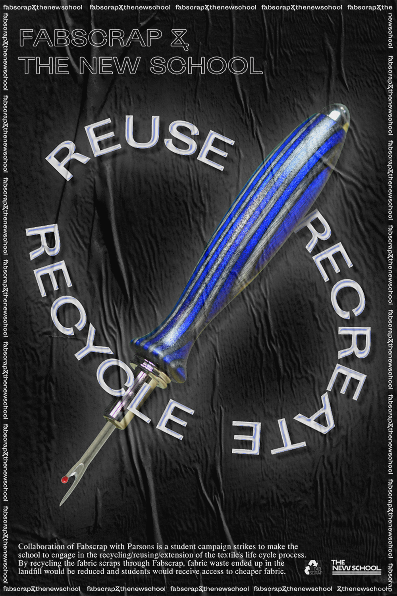
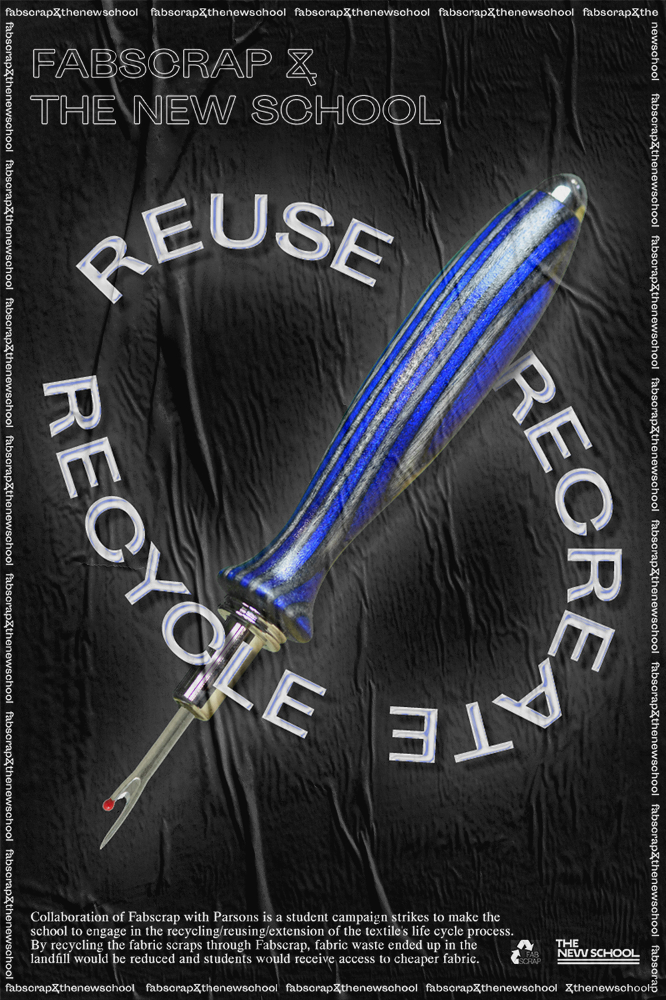
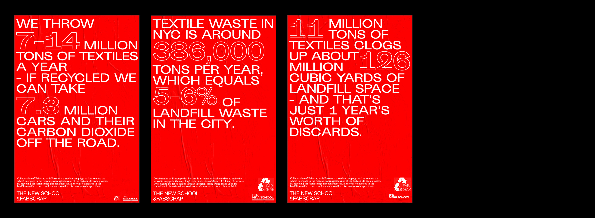

FABSCRAP & PARSONS COLLABORATION
Sustainable system for fabric recycling.
2018 Campaign
While Parsons’ Fashion Department always strives to incorporate sustainability as part of the curriculum, the studio environment hardly reflects the values of sustainable design. Massive amount of textile waste remains unrecycled. With students' market research data, this campaign raises a proposal for the opportunity of a more efficient textile recycling system.
Parsons will collaborate with the New York City based organization Fabscrap to process the textile waste and receive discounted fabric.
 

While main posters serves for explanatory purpose, this serie of red secondary posters reveals the status quo of textile waste in the US.
Secondary poster

Animated main poster